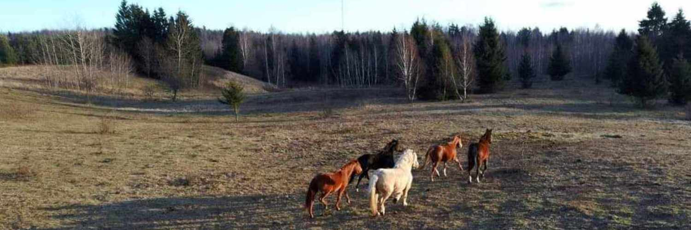

tu esi savas. Tu esi šios bandos dalis.
Žirgų namus „Papieviais“ įkūrėme 2015 metais kaip alternatyvią gyvenimo erdvę žirgams, kurie negali gyventi tradiciniuose žirgynuose. Žirgynai, kuriuose žirgai gyvena po vieną garduose, ir į lauką yra išleidžiami tik keletui valandų per dieną yra pritaikyti sportiniam santykiui, žmogaus, bet ne žirgo poreikiams. Žirgo poreikis yra jausti saugią laisvę ir būti bandos dalimi. Ankstyvos sportinės traumos, nelaimingi atsitikimai, įvairios ligos, žmonių asmeninio gyvenimo pokyčiai ir virsmai yra tai, kas slepiasi po mūsų namų gyventojų istorijomis. Kiekvienas žirgas į mūsų namus yra atlydimas savo mylinčių šeimininkų. Žirgas yra atsakomybė visam gyvenimui, jeigu kartą užmezgei ryšį, kelio atgal nebėra. Mūsų žirgai nėra mūsų klientai, jie mūsų bendruomenė. Mums nesvarbios nuosavybės teisės, svarbi tiktai šalia esančio gyvūno gyvenimo kokybė ir pastangos dėl jo gerovės.
Mūsų žirgai gyvena dešimties hektarų kalnuotoje teritorijoje, ir tai užtikrina jų prigimtinį poreikį nuolat laisvai judėti. Ganyklose dalinai įgyvendinami ganyklų rojaus (angl. Padock paradise) ir takų sistemos (angl. Track system) principai, kurie užtikrina aktyvesnį žirgų judėjimą gyvenant su žmonėmis, o ne visiškoje laisvėje. Gyvenimas bandoje žirgams suteikia saugumo jausmą, nes banda yra bendruomenė su savo hierarchine pusiausvyra, lyderiais, vaidmenimis. Čia jie turi galimybę kada nori užeiti ar pasilikti pastogėje, kur gali pasislėpti nuo vėjo ir lietaus. Žirgai visą parą turi prieigą prie švežio, švaraus geriamo vandens, žolės arba šieno. Stengiamės užtikrinti visas penkias gyvūnų laisves: laisvę nejausti troškulio ir alkio, laisvę nepatirti nepatogumų, laisvę nepatirti skausmo, lasivę gyventi natūraliomis sąlygomis, laisvę nepatirti baimės ir streso.
